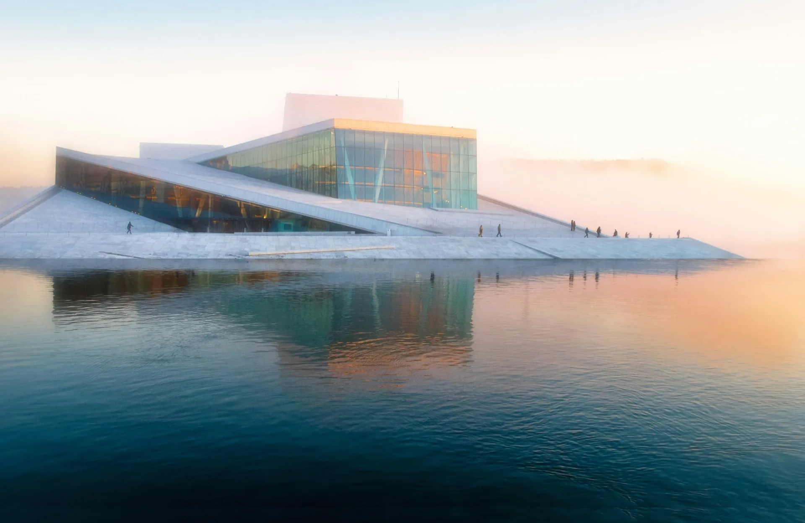

A local's plan for seeing the highlights without wasting the day
Yes — one day is genuinely enough to see Oslo's highlights, as long as you don't waste half of it working out transport. The centre is compact and the marquee sights sit close together, so the whole question of "Oslo in one day" comes down to one thing: spend your hours on the city, not on maps and ticket machines.
Here's how a local would spend a single day — the efficient version, then the relaxed version, and what to do if it turns out you have more time than you thought.
Start at the Oslo Opera House in Bjørvika. Walk up its sloping marble roof for the first view of the day across the fjord and the city. From there the harbour promenade runs west along the water — past the Munch museum, the new library, and the redeveloped Fjord City district — toward Aker Brygge, the buzzing harbourfront of restaurants and sailboats. This stretch is flat, car-free and made for a slow start.
Cut inland to Karl Johans gate, Oslo's main boulevard, which runs from the central station up to the Royal Palace and its gardens. It's a short, pleasant stretch that takes in the parliament, the National Theatre and the university. Grab lunch around here or back at Aker Brygge — you want to be fuelled for the afternoon.
Head west to Vigeland Sculpture Park in Frogner, home to Gustav Vigeland's extraordinary collection of more than 200 bronze and granite figures. It's open, free and unlike anything else in Europe. This is the one sight that sits a little out from the centre — which is exactly where a one-day plan can lose time if you're on foot.
If there's an hour left, swing through Grünerløkka, the former working-class district turned café-and-vintage quarter, and follow the Akerselva river path past old mills and waterfalls. It's the most relaxed way to end the day and a glimpse of how Oslo locals actually live.
On paper the itinerary above is simple. In practice, walking it — plus the hops out to Vigeland and over to Grünerløkka — eats a surprising amount of your single day, and you'll spend more of it checking directions than looking at the city.
This is precisely why a bike makes one day in Oslo work. Our Oslo City Highlights tour covers the waterfront, the Opera House, Vigeland Park and the Royal Palace in one relaxed two-hour loop, with a local guide who knows the shortcuts and the stories. You see everything above without the navigation, and you finish with most of your day still ahead of you — free for a museum, a long lunch, or the harbour.
One day covers the sights. But the visitors who fall for Oslo are usually the ones who discover there's more under the surface — and it's closer than they expect.
With a second day, add the fjord and the museums on the Bygdøy peninsula — Viking ships, polar expeditions and open water, all a short ride from the centre. With a third, get out of the city entirely: the Nordmarka forest begins twenty minutes from downtown, and you can ride gravel roads through pine and past still lakes without ever needing a car. (Our full breakdown of how many days you need in Oslo lays out each option.)
And if the nature bug really bites: did you know Norwegian summits are within day-trip reach of Oslo? Close to the city, Vettakollen is an easy, accessible viewpoint over the fjord; further out, a peak like Gaustatoppen makes a proper full-day adventure. Our sister company Oslo Hiking Tours runs guided hikes to both.
Then don't force it. If museums and boulevards leave you cold, spend your one Oslo day in nature instead. Trade the centre for the Nordmarka forest on one of our guided gravel rides — pine, gravel roads and still lakes, twenty minutes from downtown — or go higher: a guided full-day hike to a famous Norwegian peak is a genuine alternative to a city itinerary, and arguably the more memorable way to spend the day. For the forest, that's us; for the mountains, our sister company Oslo Hiking Tours will take you there.
The Oslo City Highlights tour covers the waterfront, Opera House, Vigeland Park and Royal Palace in two relaxed hours — so one day is more than enough.
Oslo City Highlights tourYes — one day is enough to see Oslo's main highlights, because the centre is compact and the marquee sights cluster closely together. The trick is to minimise time spent on transport and routing. A guided bike loop covers the Opera House, harbour, Royal Palace and Vigeland Park in about two hours, leaving the rest of the day free.
The essentials are the Oslo Opera House and Bjørvika waterfront, Aker Brygge harbour, Karl Johans gate and the Royal Palace, and Vigeland Sculpture Park. If you have an hour to spare, add a wander through the Grünerløkka neighbourhood along the Akerselva river.
Easily. You never need a car in central Oslo — it is compact, walkable and well served by metro, tram and ferry. The fastest way to cover the highlights is by bike, which reaches everything the centre has to offer without parking or traffic.
Yes, the centre is walkable, though Vigeland Park sits a little out to the west, so on foot you will spend a fair bit of the day walking between sights. Cycling covers the same ground in a fraction of the time, which is why a bike is the most efficient way to do Oslo in one day.